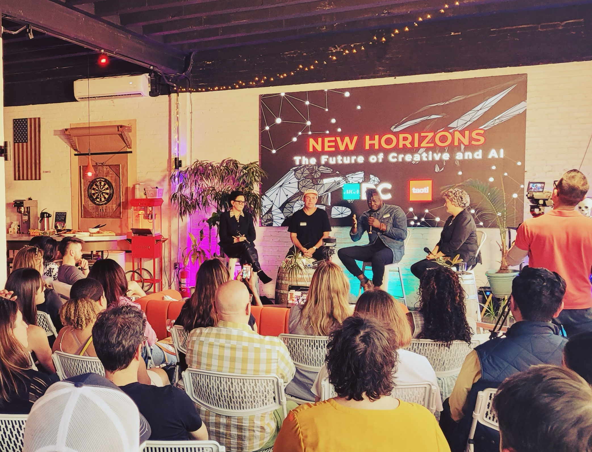
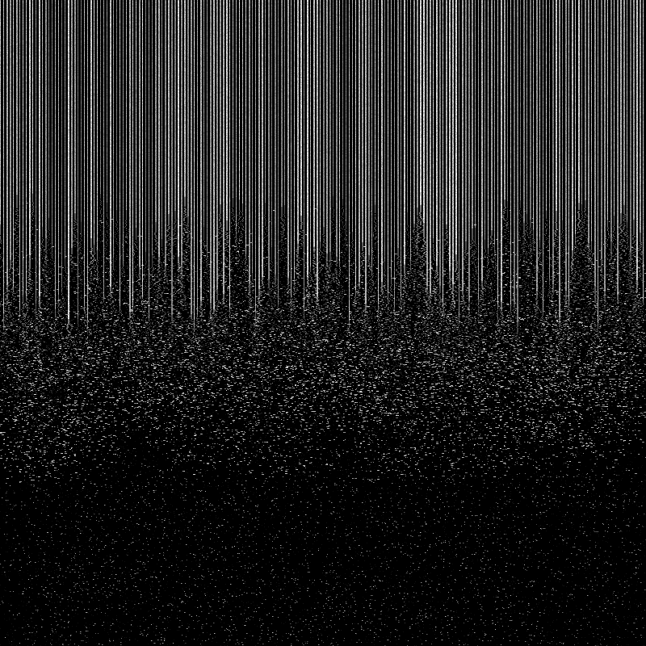
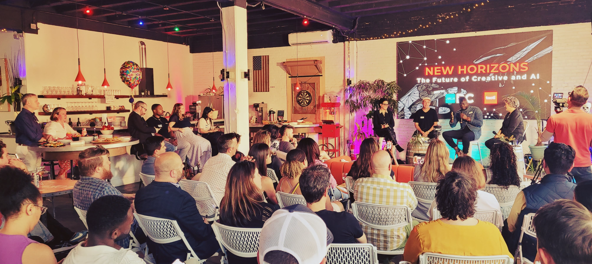

I'm TJ Cichecki, a designer and creative technologist living and working in our Nation's Capitol
For the last 15 years I've been working to help organizations understand what they stand for and make it stick.
Design is a decision,
not a decoration.
Most of the brand problems I get called in to solve aren't really design problems. They're clarity problems. The organization knows what they do but can't explain why it matters, and that gap shows up in everything they put out.
A few rules I follow that I've found to be helpful
Lead with strategy.
A logo doesn't fix a positioning problem. I start with the hard questions: who is this for, what do you actually believe, and where does that need to show up? The visual identity comes out of that thinking, which is why it's almost never the right place to begin.
Build for the room you're not in.
A brand has to work when you're not in the room. I build identity systems with enough structure to stay consistent with enough flexibility to evolve, whether that's across teams, mediums, or years. The goal is something your people can actually use.
Reference outside your category.
I've worked across VC-backed startups, tech, government, hospitality, arts, and nonprofits. Some of the best brand thinking I've done came from applying a pattern from one industry to a completely different one. That range is hard to replicate if you've only ever worked in one category.
Design for how it actually gets used.
Great work on a screen means nothing if it falls apart at the printer, on a sign, or in the hands of someone who wasn't in the room when you presented it. I design for production and for the people who will carry the brand forward after the project wraps.
How I Work Best With Clients
Creative Consulting
You have a brand problem and you want it solved. I lead the engagement from diagnosis through delivery: strategy, identity systems, positioning, creative direction. AI gets integrated where it creates real leverage. At the end of it, you get a finished solution and the thinking that went into it, which is different from what a lot of studios deliver.
Hands-on Education
Your team has the talent but needs the framework and tooling to move faster without losing quality. I run workshops and training programs that teach designers and brand teams how to use AI inside their actual process. People leave knowing which tools to reach for on different kinds of problems, and just as importantly, when their own judgment should override whatever the model hands back.
AI Tools Assessment
A $999 productized version of the consulting, built for owners of small businesses. We spend 45 minutes on how your business actually runs, and within the week you get a report prescribing 3-7 off-the-shelf tools matched to your real bottlenecks, with what each one costs and the hours it gives back. If I can't find at least 5 hours a week worth of opportunity in your business, you get a 100% refund.
Book an assessment →The future of Brand work.
For the last two years I've been running real client work through AI workflows, not experimenting with them on the side. The 15 years of brand strategy behind that is what makes the difference. I've got a pretty good read now on where these tools actually create leverage versus where they just speed up generic output, and the determining factor is almost always who's directing them.
Notes & thinking.
Observations on brand strategy, design systems, and where AI is actually fitting into the work I'm running with clients every week.

The Road to Mediocrity Is Paved with In House Creative
Good enough is now free, instant, and infinite. Which means the creative work that survives has to be worth leaving the house for.
June 11, 2026Who Owns the Workplace?
The lease is with finance. The tools are with IT. Process is with the creative directors. Meanwhile the operating environment that actually shapes how the work gets done belongs to nobody, and it's the layer that's quietly running the studio.
May 8, 2026
The Role Agencies Don't Have Yet
There's a gap forming inside agencies that nobody's posted a job listing for. It sits between leaders who know things need to change and teams who don't know where to start. The role that closes it doesn't have a name yet.
May 5, 2026Projection Mapping Without the Shadows
Synthetic aperture projector arrays are finally solving the constraint that's defined projection mapping for the last twenty years. Here's how the tech works and what it opens up for installation and exhibition design.
April 26, 20261985 had it right
Postman wrote his book about television in 1985. Forty years later, the warning lands differently because the medium has changed again, and this version of it generates the content itself.
April 26, 2026
Your AI Strategy Is Pointed at the Wrong Thing
The companies winning with AI are using it to grow into work they couldn't do before. Everyone else is using it to do the same work faster, and the gap between those two plays is where the real money is being made.
April 20, 2026Efficiency For What?
Three out of four executives admit their company's AI strategy is more performance than plan. The real problem underneath that is a question nobody has bothered to answer, which is what all this efficiency is actually for.
April 13, 2026
Designers Are Building Again
The bottleneck between design and development is finally collapsing, and the leverage is shifting back toward people who know what to build and why.
April 6, 2026Claude Code's Source Code Leaked. Here's What Designers Should Actually Care About.
Half a million lines of production code got leaked. I went through the breakdowns and pulled out the things that actually matter for how I work as a designer.
March 2026
What Claude Code Actually Is: The Architecture Visual
A visual breakdown of the execution pipeline, six core systems, essential commands, and the habits that separate the top 1% of Claude Code users.
March 2026
Why AI won't replace designers, but designers who use AI will replace those who don't
The conversation around AI in design keeps missing the point. The tool doesn't do the thinking. It accelerates the thinking of someone who already knows what good looks like.
March 2026
The clarity problem most brands don't know they have
Most organizations can tell you what they do. Very few can tell you why it matters. That gap between function and meaning is where brand strategy actually lives.
February 2026
Cross-industry pattern recognition as a design advantage
Some of the best solutions I've delivered came from applying patterns from completely unrelated industries. When you've worked across government, hospitality, and tech, you see connections others miss.
January 2026Building an AI-assisted brand workshop from scratch
I rebuilt my entire workshop format around LLM tooling. The goal was never to cut corners, it was to clear out the busywork so there's more room for the parts of the workshop that actually move the needle.
December 2025Stay in the loop.
Get notified when I publish something new. I only send when there's actually something worth reading.
Background
Through decades of this work I've run into a lot of different problems. Startups that didn't even have a name yet. Nonprofits and government agencies trying to explain themselves to audiences that had pretty strong preconceptions about what they were going to hear. The common thread has always been translation, which is figuring out what an organization actually is and making that legible to the people who need to see it.
I started Workhorse Collective in 2014 because I wanted to lead with strategy instead of aesthetics. Before that I designed digital products at PBS, built campaigns for brands like Intel and Google at David All Group, and spent six years on the board of AIGA DC helping shape DC Design Week and the design community in Washington, DC.
In school I studied visual communication, typography, and traditional book design at Northern Illinois University. That foundation in print, editorial, and traditional media still shows up in how I think about hierarchy and composition, even when the work is entirely digital.
Over the last two years my design practice has evolved into research and application of AI. I've been figuring out how LLMs can support the kind of strategic brand work I've always done, and helping other experienced practitioners use these tools without sacrificing the judgment that makes the work good. That's become a growing part of the practice: working with organizations on where AI fits into their creative operations and training their teams to use it well.

Edelman DC
Ketchum Inc
David All Group
Roberts Design Company
AIGA DC (Board Member)


DC Studio as the Innovation Lab
I work from a 1904 carriage house on Capitol Hill in Washington, DC. The space is a hybrid workshop and design studio, built around the idea that thinking through a problem physically matters as much as thinking through it on a screen.
Outside the studio.
When I'm not building brands, I'm usually spending time with my wife and our cat Lily, or practicing and competing in high-level pool.
In DC I host a monthly pool tournament, captain an APA league team, and in 2024 qualified for the APA World Pool Players Championship in Las Vegas. Pool lines up nicely with how my brain works. On the surface it's problem solving and geometry, but at high-level tournament play it becomes more of a practice in mental management and physical stamina, which is what turns a physics game into a psychology exercise.
That same mindset has led me to build within the sport too. I develop tools for the cue sports industry, most recently my own live streaming app for capturing and sharing matches. I also founded District Carbon, a cue brand focused on performance and a sense of place in its identity. I approach all of it as an operator, looking for ways to improve the system and create something people want to be part of.
Have a pool industry brand and need an outside design perspective? Hire me to do a design and customer experience design audit, a brand strategy consult, or even a complete brand redesign. I work on a pre-paid monthly retainer and am happy to work with budgets of all sizes.
Get in touch →

Let's work together.
If you're looking for brand work, a fractional creative director to get your team in shape, or AI consulting and training I'd love to hear what you're working on!